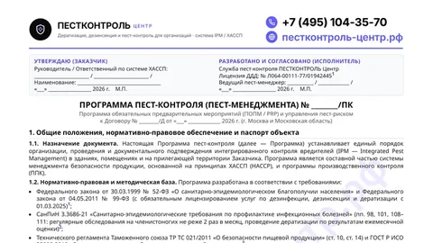
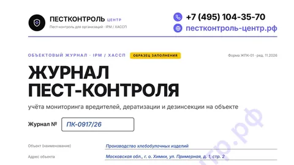
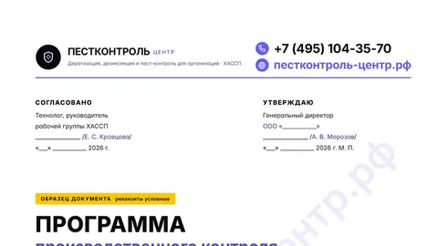
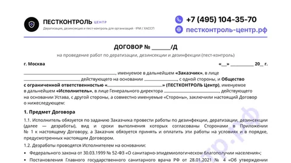
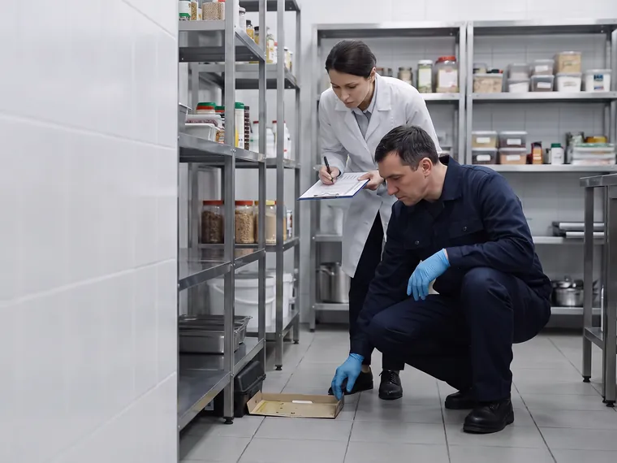

СанПиН и требования к дезинсекции и дератизации: что действует в 2026 году

Главный документ о дезинсекции и дератизации — СанПиН 3.3686-21, раздел III. Он действует до 1 сентября 2027 года. По нему организации и ИП обязаны обеспечить обследования объектов, учёт вредителей и обработки; выполняет эти работы по договору специализированная организация. С 1 сентября 2026 года действуют новые правила для общепита, торговли и помещений, с 4–5 октября инспекторы работают по новым проверочным листам. Оказывать услуги по дезинсекции и дератизации с 1 марта 2025 года можно только по лицензии.
Что нужно знать о требованиях к пест-контролю в 2026 году
- Дезинсекцию и дератизацию обеспечивает бизнес. Юридические лица и ИП организуют на своих объектах профилактику, обследования, истребительные мероприятия и контроль их эффективности (п. 88 СанПиН 3.3686-21). Работы выполняет по договору специализированная организация. Санитарно-противоэпидемические мероприятия обязательны для всех, кто ведёт деятельность (п. 3 ст. 29 Федерального закона № 52-ФЗ).
- Для пищевых объектов, гостиниц, медицинских и детских организаций кратность выше. Пищевые производства, общепит, хранение и торговля продуктами, гостиницы, медицинские и детские организации относятся к объектам особого эпидемиологического значения (п. 98). Их обследуют на насекомых не реже 2 раз в месяц (п. 101), а дератизацию проводят по результатам ежемесячной оценки (п. 110).
- На пищевых объектах грызунов и насекомых быть не должно. В торговле продуктами, общепите и пищевой промышленности их наличие не допускается (п. 128 СанПиН 3.3686-21).
- Исполнитель — только с лицензией. Начиная с 01.03.2025 эта деятельность лицензируется (99-ФЗ, постановление Правительства РФ № 337). Лицензию подрядчика проверяют в реестре Роспотребнадзора.
- Два главных СанПиН заканчивают действие в 2027 году: СанПиН 2.1.3684-21 — 1 марта, СанПиН 3.3686-21 — 1 сентября. После утверждения новых правил программы производственного контроля и договоры нужно будет обновить.
Как часто проводить дезинсекцию и дератизацию
Кратность установлена разделом III СанПиН 3.3686-21. Норма говорит об обследованиях — осмотре, учёте вредителей и проверке точек контроля. Обработки назначают по их результатам.
Другие объекты: насекомые — 1 раз в месяц, открытые территории — 1 раз в месяц, очаги — 1 раз в неделю (п. 101).
| Что и где | Как часто | Норма |
|---|---|---|
| Обследования на насекомых на объектах особого эпидемиологического значения: пищевые производства, общепит, хранение и торговля продуктами, гостиницы, медицинские и детские организации и другие объекты из п. 98 | Не реже 2 раз в месяц | п. 101 |
| Обследования на насекомых на других объектах; в п. 101 в скобках названы места общего пользования многоквартирных домов и общежитий | 1 раз в месяц | п. 101 |
| Открытые территории | 1 раз в месяц | п. 101 |
| Очаги инфекционных и паразитарных заболеваний, анофелогенные водоёмы | 1 раз в неделю | п. 101 |
| Оценка заселённости грызунами на объектах особого эпидемиологического значения; дератизацию проводят по её результатам | Ежемесячно | п. 110 |
| Системы мусороудаления, включая мусоросборные камеры; при обнаружении вредителей обработку проводят незамедлительно | Не реже 1 раза в месяц | п. 133 |
Если дезинсекция не дала результата, проверяют качество препарата и повторяют обработку инсектицидами из другой группы химических веществ (п. 99). Как инспекторы спрашивают о кратности — в разборе проверочных листов.
Действующие документы о дезинсекции и дератизации
Что в каждом документе важно для пест-контроля, сроки действия и ссылки на официальные тексты.
- Законыобязанность, лицензия, ответственность
- Санитарные правилачто и как часто делать
- Как проверяютвопросы инспектора
- Стандарты и методикиХАССП, GMP, рекомендации
- Ваши документычто покажете на проверке
Основные санитарные правила
| Документ | Что в нём для пест-контроля | Действует | Официальный текст |
|---|---|---|---|
| Федеральный закон от 30.03.1999 № 52-ФЗ «О санитарно-эпидемиологическом благополучии населения» | Ст. 29: санитарно-противоэпидемические мероприятия обязательны для граждан, ИП и юридических лиц | Действует | Гарант |
| СанПиН 3.3686-21 «Санитарно-эпидемиологические требования по профилактике инфекционных болезней», раздел III | П. 88 — обязанности организаций и ИП; п. 98 — перечень объектов особого эпидемиологического значения; п. 99 — контроль эффективности и смена средств; п. 101 — кратность обследований; п. 102 — подготовка помещений и информирование сотрудников; пп. 108–111 — дератизация; пп. 128–130 — пищевые объекты, торговля, места массового пребывания; п. 133 — мусороудаление | До 01.09.2027 | pravo.gov.ru |
| СанПиН 2.1.3684-21 — содержание территорий, помещений, санитарно-противоэпидемические мероприятия | П. 8 и приложение № 1 — уборка, дезинсекция и дератизация контейнерных площадок | До 01.03.2027; редакция от 10.09.2026 действует с 05.10.2026 | pravo.gov.ru, текст редакции |
Отраслевые правила 2026 года — действуют с 01.09.2026
| Документ | Что в нём для пест-контроля | Источник |
|---|---|---|
| СанПиН 2.3/2.4.4282-26 — общественное питание | П. 4 — производственный контроль на принципах ХАССП; п. 26 — в помещениях не должно быть насекомых, грызунов, синантропных птиц и животных; п. 45 — нельзя хранить и готовить продукцию во время обработок и применять распыляемые и рассыпаемые средства при посетителях и персонале | Гарант, проверочный лист № 580, прил. 2 |
| СП 2.3.6.4281-26 — торговля пищевой продукцией, рынки | П. 46 — сыпучие продукты хранят в помещениях, не заражённых амбарными вредителями; п. 72 — дератизация площадки накопления отходов; п. 78 — насекомые и грызуны не допускаются, нужны дезинсекция, дератизация и инженерная защита зданий | ЦГОН Роспотребнадзора, проверочный лист № 580, прил. 1 |
| СП 2.1.4284-26 — эксплуатация помещений, гостиницы, услуги, медицинские организации | П. 14 — в помещениях не должно быть насекомых, грызунов и следов их жизнедеятельности; при их появлении обработки проводит организация, осуществляющая дезинфекционную деятельность, в отсутствие работников и потребителей. Пп. 14 и 21 — грызунонепроницаемость перекрытий и мест прохода коммуникаций (вопрос из листа для медицинских организаций) | КонсультантПлюс, проверочный лист № 578, прил. 10 |
| СП 2.4.2.4283-26 — детские и образовательные организации | Организация и контроль дезинфекции, дезинсекции и дератизации; в загородных лагерях перед сменой — противоклещевая обработка и борьба с грызунами | проверочный лист № 578, прил. 14 |
Проверочные листы
| Документ | Что в нём | Действует | Текст |
|---|---|---|---|
| Приказ Роспотребнадзора от 20.07.2026 № 578 — 31 форма: торговля непродовольственными товарами, гостиницы, медицинские организации, аптеки, образование, отходы и другие | Вопросы о насекомых и грызунах, кратности обследований и исполнителе работ | С 04.10.2026; заменил приказ № 18 от 20.01.2022 | Гарант |
| Приказ Роспотребнадзора от 20.07.2026 № 580 — 6 форм: торговля пищевой продукцией, общепит, спорт, прачечные, салоны красоты, бани | Те же вопросы плюс запреты при обработках в общепите и амбарные вредители в торговле | С 05.10.2026; заменил приказ № 808 от 24.12.2021 | официальная публикация, Гарант |
Разбор всех вопросов о вредителях по видам объектов — на странице «Проверочные листы 2026».
Лицензия и требования к исполнителю
| Документ | Что в нём | Действует | Текст |
|---|---|---|---|
| 99-ФЗ «О лицензировании отдельных видов деятельности», пп. 59 п. 1 ст. 12; Положение о лицензировании — постановление Правительства РФ от 20.03.2024 № 337 | Лицензия на услуги по дезинфекции, дезинсекции и дератизации — обязательна для исполнителя | С 01.03.2025 | ЦГОН Роспотребнадзора, Роспотребнадзор по Кировской области |
| Реестр лицензий Роспотребнадзора | Проверка лицензии подрядчика | — | fp.rospotrebnadzor.ru |
| Приказ Роспотребнадзора от 30.05.2024 № 415 | Форма программы производственного контроля для организаций, которые оказывают эти услуги | 01.09.2024–01.09.2030 | pravo.gov.ru |
Методические документы
| Документ | Что в нём | Текст |
|---|---|---|
| МР 3.5.3.0374-25 «Дератизация. Организация и проведение дератизационных мероприятий» | Утверждены 28.04.2025 взамен МУ 3.5.3.2949-11. Виды дератизации, ежемесячные мероприятия на объектах особого эпидемиологического значения, учёт в контрольно-учётной карте объекта | legalacts.ru |
| МР 5.1.0098-14 «Методические подходы к организации оценки процессов производства (изготовления) пищевой продукции на основе принципов ХАССП» | Утверждены 18.12.2014. По процедуре дезинсекции и дератизации инспектор запрашивает инструкции, договоры, акты сдачи-приёмки, журналы, графики и осматривает объект | Роспотребнадзор, PDF |
| Р 3.5.2.2487-09 «Руководство по медицинской дезинсекции» | Утверждено 26.02.2009, введено с 01.05.2009. Методы учёта насекомых: клеевые ловушки 3–5 штук на 10 м², учёт через 1–2 дня; объект свободен от тараканов, если их не находят в течение месяца. Подробнее — в разборе «Оценка эффективности» | Гарант |
Пищевая безопасность, ХАССП и GMP
| Документ | Что в нём для пест-контроля | Текст |
|---|---|---|
| ТР ТС 021/2011 «О безопасности пищевой продукции» | Ст. 10 ч. 3 п. 10 — процедура на принципах ХАССП: выбрать способы, установить периодичность и проводить дезинсекцию и дератизацию производственных помещений. Ст. 17 — защита продукции от грызунов и насекомых при хранении и перевозке | Техэксперт, Роспотребнадзор по Санкт-Петербургу |
| ГОСТ Р 51705.1-2024 «Системы менеджмента качества. Управление качеством и безопасностью пищевых продуктов на основе принципов ХАССП. Общие требования» | Введён с 01.11.2024 взамен ГОСТ Р 51705.1-2001 | Гарант |
| ГОСТ Р 54762-2011/ISO/TS 22002-1:2009 «Программы предварительных требований по безопасности пищевой продукции. Часть 1. Производство пищевой продукции» | Раздел 12 «Борьба с вредителями»: программы борьбы с вредителями, защита от проникновения | Гарант |
| Правила надлежащей производственной практики ЕАЭС (решение Совета ЕЭК от 03.11.2016 № 77) | П. 3.4: помещения должны максимально защищать от проникновения насекомых и животных | Гарант |
Ответственность
| Документ | Что в нём | Текст |
|---|---|---|
| КоАП РФ, ст. 6.3, 6.4, 6.6, 14.43, 19.5 | Штрафы и приостановление деятельности за санитарные нарушения, нарушение технических регламентов и невыполнение предписания. Суммы — в таблице на странице санитарного аудита | ст. 6.3, ст. 6.4, ст. 6.6 |
Что меняется в 2026–2027 годах
Прошедшие события отмечены серым, предстоящие — цветом.
- Услуги по дезинсекции и дератизации — только по лицензии
- Новые правила для общепита, торговли, помещений и условий труда
- Начали применяться новые проверочные листы
- Новая редакция СанПиН 2.1.3684-21
- Заканчивается срок СанПиН 2.1.3684-21
- Заканчивается срок СанПиН 3.3686-21
Вступили в силу правила для общепита, торговли, помещений и условий труда
Что сделатьОбновить ссылки в программе производственного контроля и программе пест-контроля
Начали применяться новые проверочные листы
Что сделатьПройти вопросы своей формы — разбор проверочных листов
Вступила в силу редакция СанПиН 2.1.3684-21 от 10.09.2026
Заканчивается срок СанПиН 2.1.3684-21. В июле 2026 года разработан проект замены (Техэксперт)
Что сделатьПосле утверждения сверить ссылки в программах и договоре
Заканчивается срок СанПиН 3.3686-21. Изменения, подготовленные в марте 2026 года, раздел о дезинсекции и дератизации не затрагивают (Гарант)
Что сделатьМы отслеживаем проекты и обновим эту страницу и образцы документов после публикации новых правил
Заканчивается срок формы программы производственного контроля для исполнителей (приказ № 415)
Документы, которые больше не действуют
Если программа производственного контроля, программа пест-контроля или договор ссылаются на эти документы, их пора обновить: инспектор и аудитор торговой сети увидят, что документы давно не пересматривали.
| Устаревший документ | Чем заменён | С какой даты |
|---|---|---|
| СанПиН 3.3686-21, раздел III | 01.09.2021 (Техэксперт) | |
| СанПиН 3.3686-21, раздел III | 3472-17 утратил силу 01.09.2021 (NormaCS, Контур) | |
| МР 3.5.3.0374-25 | Утверждены 28.04.2025 | |
| СанПиН 2.3/2.4.4282-26 | 01.09.2026 | |
| СП 2.3.6.4281-26 | 01.09.2026 | |
| СП 2.1.4284-26 | 01.09.2026 | |
| ГОСТ Р 51705.1-2024 | 01.11.2024 | |
| Приказы Роспотребнадзора | Приказы № 578 и № 580 от 20.07.2026 | 04–05.10.2026 |
Какие требования применяются к вашему объекту
| Объект | Основные требования | Проверочный лист |
|---|---|---|
| Пищевое производство | СанПиН 3.3686-21 (пп. 98, 101, 110, 128); ТР ТС 021/2011, ст. 10; ГОСТ Р 54762-2011, раздел 12 | Отдельной формы в приказах № 578 и № 580 нет. Процедуры ХАССП оценивают по МР 5.1.0098-14 |
| Ресторан, кафе, столовая | СанПиН 2.3/2.4.4282-26 (пп. 4, 26, 45); СанПиН 3.3686-21 (пп. 98, 101, 110, 128) | № 580, приложение 2. Питание детей — № 578, приложение 24 |
| Магазин продуктов, рынок | СП 2.3.6.4281-26 (пп. 46, 72, 78); ТР ТС 021/2011, ст. 17; СанПиН 3.3686-21 (п. 128) | № 580, приложение 1 |
| Склад пищевой продукции | СанПиН 3.3686-21 (пп. 98, 101, 110, 128); ТР ТС 021/2011, ст. 17 | Отдельной формы нет |
| Гостиница | СП 2.1.4284-26 (п. 14); СанПиН 3.3686-21 (пп. 101, 110, 130, 133) | № 578, приложение 2 |
| Медицинская организация | СП 2.1.4284-26 (пп. 14, 21, 24, 44); СанПиН 3.3686-21 (п. 110) | № 578, приложение 10 |
| Аптека | СП 2.1.4284-26 (п. 14); СанПиН 3.3686-21 (пп. 101, 108, 110) | № 578, приложение 11 |
| Магазин непродовольственных товаров | СП 2.1.4284-26 (п. 14); СанПиН 3.3686-21 (пп. 98, 108) | № 578, приложение 1 |
| Фармацевтическое производство | Правила GMP ЕАЭС, п. 3.4 | — |
Это ориентир. На одном объекте может применяться несколько форм — например, в гостинице с рестораном. Номера вопросов о вредителях для каждой формы — в разборе проверочных листов.
Разборы и образцы документов

ОбразецПрограмма пест-контроляСмотреть образец →
ОбразецЖурнал пест-контроляСмотреть образец →
ОбразецПрограмма производственного контроля по ХАССПСмотреть образец →
ОбразецДоговор на дератизацию и дезинсекциюСмотреть договор → УслугаСанитарный аудит: виды проверок и штрафыПодробнее →
Разбор · сроки и критерииОценка эффективности дератизации и дезинсекции: сроки и критерииКогда проверять результат обработки, чем считают грызунов и насекомых, что считается эффектом по СанПиН 3.3686-21 и какие записи показать на проверке.Читать разбор →Что спросит инспектор о насекомых и грызунах
К теме относится 101 вопрос в 31 листе Роспотребнадзора. Вопросы приведены дословно, с документом и пунктом; подбор по теме сделан автоматически.
Парикмахерская, салон красоты, солярий
10 вопросов20.Обеспечивается ли контролируемым лицом проведение уборки, дезинсекции и дератизации контейнерной и (или) специальной площадки в зависимости от температуры наружного воздуха, количества контейнеров на площадке, расстояния до нормируемых объектов в соответствии с требованиями приложения № 1 к СанПиН 2.1.3684-21?
28.Обеспечивается ли контролируемым лицом отсутствие в помещениях насекомых и следов их жизнедеятельности?
29.Обеспечивается ли контролируемым лицом отсутствие в помещениях грызунов и следов их жизнедеятельности?
30.Соблюдается ли контролируемым лицом установленная нормативами кратность плановых обследований на заселенность объекта членистоногими (силами организации, осуществляющей дезинфекционную деятельность)?
31.Обеспечивается ли контролируемым лицом проведение ежемесячной оценки заселенности объекта грызунами силами организации, осуществляющей дезинфекционную деятельность (для объектов, имеющих особое эпидемиологическое значение)?
32.Обследуются ли контролируемым лицом системы мусороудаления, включая мусоросборные камеры с периодичностью не реже 1 раза в месяц на предмет наличия синантропных членистоногих, имеющих эпидемиологическое и санитарно-гигиеническое значение?
33.Обследуются ли контролируемым лицом системы мусороудаления, включая мусоросборные камеры с периодичностью не реже 1 раза в месяц на предмет наличия грызунов, имеющих эпидемиологическое и санитарно-гигиеническое значение?
89.Осуществляются ли контролируемым лицом в организациях, оказывающих парикмахерские и косметические услуги дезинсекция?
90.Осуществляется ли контролируемым лицом в организациях, оказывающих парикмахерские и косметические услуги дератизация?
117.Обеспечена ли контролируемым лицом при обнаружении вшей дезинсекция инструментов и белья, использованных при обслуживании средствами от вшей (педикулицидами)?
Медицинская организация
7 вопросов8.Обеспечено ли контролируемым лицом отсутствие в помещениях насекомых, грызунов и следов их жизнедеятельности?
9.Обеспечена ли контролируемым лицом грызунонепроницаемость межэтажных перекрытий, перегородок, стыков между ними и мест прохождения инженерных коммуникаций и проводок в зданиях?
10.Проводится ли контролируемым лицом дезинсекция и дератизация при появлении синантропных насекомых и грызунов в помещениях?
67.Обеспечена ли контролируемым лицом защита продухов чердачных и подвальных помещений медицинской организации от проникновения грызунов, птиц и синантропных насекомых?
144.Обеспечено ли контролируемым лицом отсутствие в медицинской организации насекомых и грызунов?
189.3.Обеспечено ли контролируемым лицом сбор медицинскими работниками эпидемиологического анамнеза с установлением следующих данных: факта укусов животных, насекомых, членистоногих, нахождения в природных условиях?
198.Осуществляется ли контролируемым лицом дератизация в медицинской организации в соответствии с пунктом 110 СанПиН 3.3686-21?
Гостиница
6 вопросов28.Обеспечивается ли контролируемым лицом проведение уборки, дезинсекции и дератизации контейнерной площадки в зависимости от температуры наружного воздуха, количества контейнеров на площадке, расстояния до нормируемых объектов в соответствии с приложением № 1 к СанПиН 2.1.3684-21?
39.Обеспечивает ли контролируемое лицо отсутствие в используемых им помещениях насекомых, грызунов и следов их жизнедеятельности?
40.Проводится ли контролируемым лицом при появлении синантропных насекомых и грызунов дезинсекция и дератизация силами организации, осуществляющей дезинфекционную деятельность (в отсутствие работников и потребителей)?
41.Обеспечивается ли контролируемым лицом установленная нормативами кратность плановых обследований на заселенность членистоногими эксплуатируемых им объектов, имеющих особое эпидемиологическое значение, силами организации, осуществляющей дезинфекционную деятельность?
42.Обеспечивается ли контролируемым лицом проведение ежемесячной оценки заселенности грызунами эксплуатируемых им объектов, имеющих особое эпидемиологическое значение, силами организации, осуществляющей дезинфекционную деятельность?
43.Обследуются ли контролируемым лицом системы мусороудаления, включая мусоросборные камеры (при их наличии), с периодичностью не реже 1 раза в месяц, на предмет наличия синантропных членистоногих и грызунов?
Спорт, бассейн, аквапарк
6 вопросов27.Обеспечивается ли контролируемым лицом проведение уборки, дезинсекции и дератизации контейнерной площадки и (или) специальной площадки в зависимости от температуры наружного воздуха, количества контейнеров на площадке, расстояния до нормируемых объектов в соответствии с приложением № 1 к СанПиН 2.1.3684-21?
51.Отсутствуют ли в помещениях контролируемого лица насекомые, грызуны и следы их жизнедеятельности?
52.Проводится ли контролируемым лицом дезинсекция и дератизация силами организации, осуществляющей дезинфекционную деятельность (в отсутствие работников и потребителей) при появлении синантропных насекомых и грызунов?
53.Соблюдает ли контролируемое лицо установленную кратность плановых обследований на заселенность членистоногими: не менее 2 раз в месяц - для объектов, имеющих особое эпидемиологическое значение; 1 раз в месяц - для других объектов (в том числе в местах общего пользования многоквартирных домов, общежитий) и открытых территорий; 1 раз в неделю - в очагах инфекционных и паразитарных заболеваний, а также анофелогенных водоемов?
54.Обеспечивается ли контролируемым лицом проведение ежемесячной оценки заселенности объекта грызунами силами организации, осуществляющей дезинфекционную деятельность, по результатам которой осуществляется дератизация (для объектов, имеющих особое эпидемиологическое значение)?
55.Обследуются ли контролируемым лицом системы мусороудаления, включая мусоросборные камеры, с периодичностью не реже 1 раза в месяц, на предмет наличия синантропных членистоногих и грызунов, имеющих эпидемиологическое и санитарно-гигиеническое значение?
Баня, сауна
6 вопросов25.Обеспечивается ли контролируемым лицом проведение уборки, дезинсекции и дератизаций контейнерной площадки в зависимости от температуры наружного воздуха, количества контейнеров на площадке, расстояния до нормируемых объектов в соответствии с приложением № 1 к СанПиН 2.1.3684-21?
35.Обеспечено ли отсутствие в помещениях контролируемого лица насекомых, грызунов и следов их жизнедеятельности?
36.Проводится ли контролируемым лицом при появлении синантропных насекомых и грызунов дезинсекция и дератизация силами организации, осуществляющей дезинфекционную деятельность (в отсутствие работников и потребителей)?
37.Обеспечивается ли контролируемым лицом установленная нормативами кратность плановых обследований на заселенность объекта членистоногими (силами организации, осуществляющей дезинфекционную деятельность)?
38.Обеспечивается ли контролируемым лицом проведение ежемесячной оценки заселенности объекта грызунами силами организации, осуществляющей дезинфекционную деятельность (для объектов, имеющих особое эпидемиологическое значение)?
39.Обследуются ли контролируемым лицом системы мусороудаления, включая мусоросборные камеры, с периодичностью не реже 1 раза в месяц, на предмет наличия синантропных членистоногих и грызунов?
Продуктовый магазин и рынок
5 вопросов58.Обеспечивает ли контролируемое лицо защиту пищевой продукции от загрязнения, проникновения животных, в том числе грызунов и насекомых, проведение очистки, мойки, дезинфекции конструкцией грузовых отделений транспортных средств и контейнеров?
89.Соблюдаются ли контролируемым лицом требования к хранению сыпучих пищевых продуктов в помещениях не зараженными амбарными вредителями в соответствии с требованиями, установленными производителями?
138.Осуществляется ли контролируемым лицом проведение промывки и дезинфекции мусоросборников, а также уборка, дезинфекция и дератизация места (площадки) накопления твердых коммунальных отходов?
153.Соблюдается ли контролируемым лицом требование о запрете присутствия (наличия) в торговом объекте насекомых и грызунов?
155.Проведены ли контролируемым лицом мероприятия по дезинсекции и дератизации, в том числе инженерно-технические, по защите зданий и помещений объектов торговли от проникновения насекомых и грызунов, порядок и периодичность которых определяется с учетом требований санитарно-эпидемиологических правил?
Аптека
5 вопросов19.Обеспечивается ли контролируемым лицом проведение уборки, дезинсекции и дератизации контейнерной площадки в соответствии с СанПиН 2.1.3684-21?
24.Отсутствуют ли у контролируемого лица в помещениях насекомые, грызуны и следы их жизнедеятельности?
25.Проводится ли контролируемым лицом при появлении синантропных насекомых и грызунов дезинсекция и дератизация силами организации, осуществляющей дезинфекционную деятельность (в отсутствие работников и потребителей)?
26.Обеспечивается ли контролируемым лицом установленная нормативами кратность плановых обследований на заселенность объекта членистоногими (силами организации, осуществляющей дезинфекционную деятельность)?
27.Обеспечивается ли контролируемым лицом проведение ежемесячной оценки заселенности объекта грызунами силами организации, осуществляющей дезинфекционную деятельность (для объектов, имеющих особое эпидемиологическое значение)?
Прачечная, химчистка
5 вопросов28.Обеспечивается ли контролируемым лицом проведение уборки, дезинсекции и дератизации контейнерной площадки и (или) специальной площадки в зависимости от температуры наружного воздуха, количества контейнеров на площадке, расстояния до нормируемых объектов в соответствии с приложением № 1 к СанПиН 2.1.3684-21?
49.Отсутствуют ли в помещениях контролируемого лица насекомые, грызуны и следы их жизнедеятельности?
50.Обследуются ли контролируемым лицом системы мусороудаления, включая мусоросборные камеры, с периодичностью не реже 1 раза в месяц, на предмет наличия синантропных членистоногих и грызунов, имеющих эпидемиологическое и санитарно-гигиеническое значение?
68.Осуществляются ли контролируемым лицом в организациях химической чистки (в прачечных) мероприятия по дератизации в соответствии с санитарными правилами по профилактике и управлению рисками инфекционных и паразитарных болезней?
69.Осуществляются ли контролируемым лицом в организациях химической чистки мероприятия по дезинсекции в соответствии с санитарными правилами по профилактике и управлению рисками инфекционных и паразитарных болезней?
Санитарный пропускник
5 вопросов15.Обеспечивает ли контролируемое лицо проведение дератизации не реже одного раза в месяц?
16.Обеспечивает ли контролируемое лицо проведение дезинсекции не реже одного раза в месяц?
29.Обеспечивается ли контролируемым лицом проведение уборки, дезинсекции и дератизации контейнерной площадки и (или) специальной площадки в зависимости от температуры наружного воздуха, количества контейнеров на площадке, расстояния до нормируемых объектов в соответствии с приложением № 1 к СанПиН 2.1.3684-21?
37.Обеспечивается ли контролируемым лицом проведение ежемесячной оценки заселенности объекта грызунами силами организации, осуществляющей дезинфекционную деятельность (для объектов, имеющих особое эпидемиологическое значение)?
38.Обследуются ли контролируемым лицом системы мусороудаления, включая мусоросборные камеры (при их наличии), с периодичностью не реже 1 раза в месяц, на предмет наличия синантропных членистоногих и грызунов?
Общепит: ресторан, кафе, столовая
4 вопроса11.Проводится ли контролируемым лицом в предприятии общественного питания производственный контроль, основанный на принципах ХАССП, в соответствии с порядком и периодичностью (включая организационные мероприятия, лабораторные исследования и испытания), установленными предприятием общественного питания, а именно выбор обеспечивающих безопасность пищевой продукции способов, установление периодичности и проведение уборки, мойки, дезинфекции, дезинсекции и дератизации производственных помещений, технологического оборудования и инвентаря, используемых в процессе производства (изготовления) пищевой продукции?
58.Обеспечено ли контролируемым лицом отсутствие в помещениях предприятия общественного питания насекомых и грызунов, синантропных птиц и животных?
108.Соблюдается ли контролируемым лицом запрет на хранение и изготовление продукции во время проведения мероприятий по дератизации и дезинсекции в производственных помещениях предприятия общественного питания?
109.Соблюдается ли контролируемым лицом запрет на проведение дератизации и дезинсекции распыляемыми и рассыпаемыми токсичными химическими веществами в присутствии посетителей и персонала (за исключением персонала организации, задействованного в проведении таких работ)?
Организация социального обслуживания
4 вопроса22.Отсутствуют ли в помещениях контролируемого лица насекомые, грызуны и следы их жизнедеятельности?
23.Обеспечивается ли контролируемым лицом установленная нормативами кратность плановых обследований на заселенность объекта контролируемого лица членистоногими (силами организации, осуществляющей дезинфекционную деятельность)?
24.Обеспечивается ли контролируемым лицом проведение ежемесячной оценки заселенности объектов контролируемого лица, имеющих особое эпидемиологическое значение, грызунами силами организации, осуществляющей дезинфекционную деятельность?
153.Установлены ли контролируемым лицом москитные сетки на окнах в помещениях столовой, жилых комнат, спален, медицинского назначения?
Загородный лагерь
4 вопроса46.Обеспечивает ли контролируемое лицо оборудование открываемых окон помещений в весенний, летний и осенний периоды москитными сетками?
58.Обеспечивает ли контролируемое лицо перед открытием смены организацию и проведение противоклещевой (акарицидной) обработки территории, а также мероприятий по борьбе с грызунами в целях профилактики клещевого энцефалита, клещевого боррелиоза, геморрагической лихорадки с почечнымсиндромом и других инфекционных болезней?
59.Обеспечивает ли контролируемое лицо контроль качества проведенных обработок против клещей и грызунов путем оценки их эффективности после завершения работ?
68.Обеспечивает ли контролируемое лицо осмотр детей на предмет присасывания клещей перед дневным и ночным сном, а также по возвращении после выхода детей (экскурсия, поход) за пределы собственной территории в летний оздоровительный сезон?
Массовые мероприятия с детьми
4 вопроса1.Проинформировало ли контролируемое лицо уполномоченный орган не позднее, чем за 1 месяц до начала мероприятия о планируемых сроках проведения мероприятия, количестве участников, условиях доставки участников, условиях проживания, организации питьевого режима, организации питания, сроков проведения дератизационных, дезинсекционных мероприятий, противоклещевых обработок?
27.Оборудованы ли окна помещений, открываемые в весенний, летний и осенний периоды москитными сетками в зависимости от климатической зоны регулируемыми солнцезащитными устройствами (подъемно-поворотные жалюзи, тканевые шторы) с длиной не ниже уровня подоконника?
33.Обеспечено ли контролируемым лицом на собственной территории объекта отсутствие грызунов и насекомых, в том числе клещей, способами, предусмотренными соответствующими санитарными правилами?
34.Соблюдаются ли контролируемым лицом требования по организации и проведению мероприятий по дезинфекции, дезинсекции и дератизации, противоклещевых (акарицидных) обработок (ДДД) и контроль за их проведением?
Управление многоквартирным домом
4 вопроса3.Обеспечено ли контролируемым лицом проведение дезинсекционных мероприятий (в случае появления синантропных насекомых в местах общего пользования)?
4.Обеспечено ли контролируемым лицом соблюдение кратности проведения плановых обследований на заселенностьчленистоногими в местах общего пользования не менее 1 раза в месяц?
5.Обеспечено ли контролируемым лицом проведение дератизационных мероприятий (в случае появления грызунов в местах общего пользования)?
23.Обеспечивается ли контролируемым лицом проведение уборки, дезинсекции и дератизации контейнерной площадки в соответствии с требованиями в приложении № 1 к СанПиН 2.1.3684-21?
Общественный туалет
3 вопроса17.Отсутствуют ли в помещениях контролируемого лица насекомые, грызуны и следы их жизнедеятельности?
46.Соблюдается ли контролируемым лицом требование о проведении в общественных туалетах дератизационных мероприятий в соответствии с санитарными правилами?
47.Обеспечивает ли контролируемое лицо наличие сетки от мух на окнах в помещениях общественных туалетов в летнее время?
Отходы: медицинские, производственные, полигоны
3 вопроса46.Обеспечивается ли контролируемым лицом проведение и соблюдение периодичности проведения дезинфекции, дезинсекции и дератизации мусоропровода (при его наличии)?
76.Соблюдается ли контролируемым лицом периодичность мойки, дезинфекции и дезинсекции транспортных средств и многоразовых контейнеров для сбора медицинских отходов?
115.Обеспечивает ли контролируемое лицо ежедневно влажную уборку, а также дератизацию и дезинсекцию в соответствии с санитарно-эпидемиологическими требованиями по профилактике инфекционных и паразитарных болезней, а также к организации и проведению санитарно-противоэпидемических (профилактических) мероприятий в помещениях пунктов приема?
Непродовольственный магазин
2 вопроса27.Обеспечено ли отсутствие в помещениях контролируемого лица насекомых, грызунов и следов их жизнедеятельности?
28.Проводится ли контролируемым лицом при появлении синантропных насекомых и грызунов дезинсекция и дератизация силами организации, осуществляющей дезинфекционную деятельность (в отсутствие работников и потребителей)?
Общежитие
2 вопроса5.Обеспечено ли контролируемым лицом в помещениях общежитий отсутствие синантропных насекомых и грызунов?
6.Проводятся ли контролируемым лицом дезинсекционные и дератизационные мероприятия в соответствии с санитарно-эпидемиологическими требованиями по профилактике инфекционных и паразитарных болезней, а также к организации и проведению санитарнопротивоэпидемических (профилактических) мероприятий?
Палаточный лагерь
2 вопроса8.Обеспечивает ли контролируемое лицо на собственной территории отсутствие грызунов и насекомых, в том числе клещей, способами, предусмотренными соответствующими санитарными правилами?
22.Обеспечивает ли контролируемое лицо осмотр детей на предмет присасывания клеща перед дневным и ночным сном, а также при возвращении детей после выхода за пределы территории палаточного лагеря?
Лагерь труда и отдыха
2 вопроса24.Обеспечивает ли контролируемое лицо оборудование открываемых окон помещений в весенний, летний и осенний периоды москитными сетками?
39.Обеспечивает ли контролируемое лицо осмотр детей на предмет присасывания клещей перед дневным и ночным сном, а также по возвращении после выхода детей (экскурсия, поход) за пределы собственной территории в летний оздоровительный сезон?
Водоотведение
2 вопроса11.Обеспечено ли контролируемым лицом соблюдение требований к проведению дезинсекции?
12.Обеспечено ликонтролируемым лицом проведение на пляже дератизационных и дезинсекционных мероприятий в соответствии с требованиями СанПин 3.3686-21 и санитарно-эпидемиологическими требованиями по профилактике инфекционных и паразитарных болезней, а также к организации и проведению санитарно-противоэпидемических (профилактических) мероприятий?
Питание детей
1 вопрос20.Обеспечивает ли контролируемое лицо оборудование окон помещений регулируемыми солнцезащитными устройствами (подъёмно-поворотные жалюзи, тканевые шторы) с длиной не ниже уровня подоконника (в зависимости от климатической зоны), а также установку москитных сеток на окнах, открываемых в весенний, летний и осенний периоды?
Детский дом, социальное учреждение для детей
1 вопрос24.Обеспечивает ли контролируемое лицо оборудование окон помещений в зависимости от климатической зоны регулируемыми солнцезащитными устройствами (подъемно-поворотные жалюзи, тканевые шторы) с длиной не ниже уровня подоконника, а окна, открываемые в весенний, летний и осенний периоды, - москитными сетками?
Детский сад
1 вопрос21.Имеются ли у контролируемого лица на окнах солнцезащитные устройства и москитные сетки (на открываемые окна в весенний, летний и осенний периоды)?
Школа
1 вопрос64.Проводится ли контролируемым лицом работа по организации и проведению мероприятий по дезинфекции, дезинсекции и дератизации, противоклещевых (акарицидных) обработок и контроль за их проведением?
Дополнительное образование
1 вопрос20.Обеспечивает ли контролируемое лицо оборудование окон помещений регулируемыми солнцезащитными устройствами (подъемно-поворотные жалюзи, тканевые шторы) с длиной не ниже уровня подоконника - с учетом климатической зоны, а также оснащение окон, открываемых в весенний, летний и осенний периоды, москитными сетками?
Колледж
1 вопрос24.Обеспечивает ли контролируемое лицо оборудование окон помещений регулируемыми солнцезащитными устройствами (подъемно-поворотными жалюзи, тканевыми шторами) с длиной не ниже уровня подоконника - с учетом климатической зоны, а также оснащение окон, открываемых в весенний, летний и осенний периоды, москитными сетками?
Вуз
1 вопрос18.Обеспечено ли контролируемым лицом оборудования окон помещений в зависимости от климатической зоны регулируемыми солнцезащитными устройствами (подъемно-поворотные жалюзи, тканевые шторы) с длиной не ниже уровня подоконника, а окна, открываемые в весенний, летний и осенний периоды - москитными сетками?
Детская игровая комната
1 вопрос19.Имеются ли у контролируемого лица на окнах солнцезащитные устройства и москитные сетки (на открываемые окна в весенний, летний и осенний периоды)?
Лагерь с дневным пребыванием
1 вопрос19.Обеспечивает ли контролируемое лицо оборудование окон помещений регулируемыми солнцезащитными устройствами (подъемно-поворотные жалюзи, тканевые шторы) с длиной не ниже уровня подоконника - с учетом климатической зоны, а также оснащение окон, открываемых в весенний, летний и осенний периоды, москитными сетками?
Пляж, отдых на воде
1 вопрос7.Соблюдаются ли контролируемым лицом требования к проведению дезинсекции и дератизации в соответствии с требованиями СанПиН 2.1.3684-21 и санитарно-эпидемиологическими требованиями по профилактике инфекционных и паразитарных болезней, а также к организации и проведению санитарно-противоэпидемических (профилактических) мероприятий?
Тема присвоена вопросам автоматически, по ключевым словам. Распределение ещё не проверено санитарным врачом.
Кто подготовил материал

ИсточникиОфициальные тексты (проверено 06.11.2026)
- СанПиН 3.3686-21 — pravo.gov.ru
- СанПиН 2.1.3684-21 — pravo.gov.ru, редакция от 10.09.2026
- Правила 2026 года — КонсультантПлюс, Гарант, ЦГОН Роспотребнадзора
- Приказы № 578 и № 580 — Гарант: № 578, Гарант: № 580, официальная публикация № 580; даты вступления в силу — ppt.ru: № 578, ppt.ru: № 580
- Лицензирование — ЦГОН Роспотребнадзора, реестр лицензий, приказ № 415
- МР 3.5.3.0374-25 — legalacts.ru; МР 5.1.0098-14 — Роспотребнадзор
- ТР ТС 021/2011 — Техэксперт; ГОСТ Р 51705.1-2024 — Гарант; ГОСТ Р 54762-2011 — Гарант; GMP ЕАЭС — Гарант
- Проекты и изменения — Техэксперт: замена СанПиН 2.1.3684-21, Гарант: изменения СанПиН 3.3686-21
- 52-ФЗ, ст. 29 — Гарант; КоАП — ссылки в таблице «Ответственность»
Вопросы о нормативных требованиях
СанПиН 3.3686-21 «Санитарно-эпидемиологические требования по профилактике инфекционных болезней», раздел III. Он действует до 1 сентября 2027 года. Отраслевые требования содержатся в правилах 2026 года для общепита, торговли и помещений, а для пищевых производств — ещё и в ТР ТС 021/2011.
Да. Обеспечить дезинсекцию и дератизацию на своих объектах обязаны юридические лица и ИП (п. 88 СанПиН 3.3686-21). Выполняет работы по договору специализированная организация. Это не обязательно ежемесячная раскладка родентицидов: дератизация включает обследование, профилактику и истребительные мероприятия по результатам оценки (пп. 108–110).
Зависит от объекта. На объектах особого эпидемиологического значения — пищевых и торговых, в гостиницах, медицинских и детских организациях — обследования на насекомых проводят не реже 2 раз в месяц, на других объектах — раз в месяц (п. 101 СанПиН 3.3686-21). Заселённость грызунами на объектах особого эпидемиологического значения оценивают ежемесячно, а дератизацию проводят по результатам оценки (п. 110). Обработки назначают по результатам обследований.
Это объекты из перечня в п. 98 СанПиН 3.3686-21. Среди них организации пищевой промышленности и общественного питания, организации, которые хранят и продают пищевую продукцию, гостиницы и общежития, медицинские, санаторно-курортные и детские образовательные организации, вокзалы, аэропорты и объекты транспорта. Перечень широкий: в него входят также здания, предназначенные для постоянного или временного пребывания людей, и объекты коммунально-бытового назначения. Их обследуют на насекомых не реже 2 раз в месяц, а дератизацию проводят по результатам ежемесячной оценки.
Да. Начиная с 01.03.2025 эти работы для заказчиков выполняют только по лицензии. В проверочных листах для гостиниц, аптек, спортивных объектов, бань и магазинов непродовольственных товаров есть вопрос, проводит ли обработки «организация, осуществляющая дезинфекционную деятельность». Лицензию подрядчика проверяют в реестре Роспотребнадзора.
Нет. СП 3.5.3.3223-14 о дератизации утратили силу 1 сентября 2021 года, их требования вошли в раздел III СанПиН 3.3686-21. Тогда же утратил силу СанПиН 3.5.2.3472-17 о дезинсекции. Если программа или договор ссылаются на эти документы, ссылки нужно обновить.
Лучше обновить. Правила 2020–2021 годов для общепита, торговли и помещений заменены с 1 сентября 2026 года, а СП 3.5.3.3223-14 и СанПиН 3.5.2.3472-17 не действуют с 2021 года. Ссылки на отменённые документы показывают инспектору и аудитору, что программу давно не пересматривали.
В этот день заканчивается срок действия СанПиН 3.3686-21. Изменения, подготовленные в марте 2026 года, раздел о дезинсекции и дератизации не затрагивают. Мы отслеживаем проекты и обновим эту страницу и образцы документов, как только новые правила будут опубликованы.
На портале официального опубликования publication.pravo.gov.ru и в системе pravo.gov.ru. Ссылки на каждый документ — в таблицах выше и в списке источников.
Один подрядчик — все санитарные задачи
Пест-контроль, санитарная обработка, лабораторный контроль и документы к проверке Роспотребнадзора для организаций Москвы и области.


Осмотрим объект за один выезд и рассчитаем всё вместе — с общим графиком работ и комплектом документов.
Рассчитать комплекс


Не уверены, что относится к вашему объекту?
Санитарный врач сопоставит ваш объект с требованиями и проверочным листом. Покажем, каких документов не хватает и какие ссылки в программах устарели.
- Сверка с СанПиН и проверочным листом вашего вида деятельности
- Список документов, которых не хватает
- Устаревшие ссылки в программах и договоре